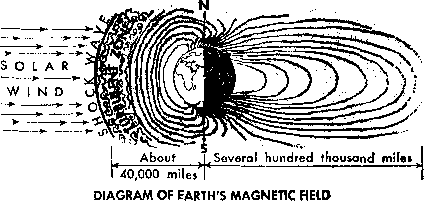

Why Did God Raise Jesus from the Dead?
Where the State Collects Taxes for the Church
How Magnetism Affects Man
Antarctica Yields Its Secrets
MARCH 22, 1969
THE REASON FOR THIS MAGAZINE
News sources that are able to keep you awake to the vital issues of our times must be unfettered by censorship and selfish interests. "Awake!" has no fetters, Jt recognizes facts, faces facts, is free to publish facts. It is not bound by political ties; it is unhampered by traditional creeds. This magazine keeps itself free, that it may speak freely to you, but it does not abuse its freedom. It maintains integrity to truth.
The viewpoint of "Awake!" is riot narrow, but is international. "Awake!" has its own correspondents in scores of nations. Its articles are read in many lands, in many languages, by millions of persons.
In every issue "Awake!" presents vital topics on which you should be informed. It features penetrating articles on social conditions and offers sound counsel for meeting the problems of everyday life. Current news from every continent passes in quick review. Attention is focused on activities in the fields of government and commerce about which you should know. Straightforward discussions of religious issues alert you to matters of vital concern. Customs and people in many lands, the marvels of creation, practical sciences and points of human interest are all embraced in its coverage. “Awake!" provides wholesome, instructive reading for every member of the family.
“Awake!" pledges itself to righteous principles, to exposing hidden foes and subtle dangers, to championing freedom for all, to comforting mourners and strengthening those disheartened by the failures of a delinquent world, reflecting sure hope for the establishment of God’s righteous new order in this generation.
Get acquainted with "Awake!" Keep awake by reading "Awake!’'
PUBLISH BY SIMULTANEOUSLY LN TUB UNITED STATES BY THE WATCHTOWER BIBLE AND TRACT SOCIETY OF NEW YORK. INC. 117 Adams Street Brooklyn. N.Y. 11201. U.S A.
and in England by WATCH TOWER BIBLE AND TRACT SOCIETY Watch Tower House, The Ridgeway London N.W. 7, England N. H. Knobs, President Grant Suiter. Secretary
Average printing each issue: 5,500,000
Si ■ cow (Aortrnn>, 5c, Soith Africa, S'/jc)
Yearly subscrlptloo r»t*s
Qfllces for semimonthly editions
Capada, 150 Elridgeland Ayr., Toron I o ID. Ont.
England, Watch Tower House,
Tht* Rhlgrway, Loiiiliiri M.W 7
Nnr Zealand, 621 New North Rd , Auckland 3
South Africa, Private Bag 2. P.O. Elandafontein, Tvl. 7 0c
(Monthly editions tort half the shove fates.)
Remittances for subscriptions should be writ to the ottk-H Io taut esufitry. /HJtenriM jvnjt remJitSftcc to Brooklyn. Notice of expiration is sent at least two issues before subscription expires.
Npw published in 26 languages Semimonthly—Afrikaans, Cebuano, Danish, Dutch, English. Finnish, French, German, Greek, Tlnko, Italian, Japanese, Korean, Norwegian, Portuguese, Spanish, Swedish, Tagalng, Zulu.
Monthly—Chinese, Cinyanja, HUigainon, Malayalam, Polish, Tamil, Ukrainian
|
CHANGES OF ADDRESS must |
reach |
as thirty day* |
|
before your mailing date. Give |
us yeer |
old and new |
|
address (If possible, your old |
address |
label). Write |
|
Watch Tower House, The Ridgeway, London N.W. 7, England. |
House, |
The Ridgeway, |
Entered as second-class matter at Brooklyn, N.Y, Printed tn England
The Bible translation regularly used In “Awake!” Ie the New World Translation nt the Holy Scriptures, 1961 edition. When other translations are used, this Is clearly marked.
CONTENTS
Do You Act with All Your Heart?
Why Did God Raise Jesus from the Dead? 5
Where the State Collects Taxes for the Church
Antarctica Yields Its Secrets
A Weekend in Indian Country
Mount Everest
A New Bethel Home in Brazil
"Your Word Is Truth”
The “Fall” Solves the Riddle
17
21
24
25
27
Volume L London, England, Maroti 22, 1969 Number 6
HOW would you like to receive two dollars from your employer for attending a musical show during working hours? Fantastic? Yes, but this actually happened to some workers.
This is what one leading United States manufacturer of color television sets offered its employees so as to get them to do better work. The company claimed that this paid off, especially as the great majority of workers in this particular factory were new employees and only partially skilled. The show described how an indifferent worker became efficient, even winning the hand of the pretty girl he was courting. The employees, it was said, enjoyed as well as profited from the show.
Yes, the problem of job motivation, of getting employees to take a real interest in their work, is giving concern to many large industrial organizations. But whether your employer is concerned with employee motivation and job satisfaction or not, you should be, and you can furnish your own job enrichment. How? By taking counsel from God’s Word, the Bible. It inculcates the spirit of taking an interest in one’s work and doing one’s best, working hard at it.
To begin with, whether we like it or not, for most of us work is indispensable. To exist we need food, clothing and shelter. For most of us, to obtain these honorably takes work. That is why the apostle Paul counseled those who apparently had refused to work: “If anyone does not want to work, neither let him eat” (2 Thess. 3:10) In fact, we need to do useful work for our own emotional well-being, which fact is underscored by the unhappiness of many workers when they are obliged to retire because of having reached a certain age. Well has it been said: “Work is as much a necessity to man as are eating and sleeping.”
Since most of us are dependent upon work for the necessities of life, why not take an interest in our work? As wise King Solomon put it: “All that your hand finds to do, do with your very power.” Why? Because, as he goes on to say, “there is no work nor devising nor knowledge nor wisdom in Sheol [ the common grave of mankind], the place to which you are going.”—Eccl. 9:10.
The apostle Paul gave similar counsel, writing to Christian slaves at Colossae: “Whatever you are doing, work at it whole-souled as to Jehovah, and not to men.” Why? Because “you know that it is from Jehovah you will receive the due reward of the inheritance.” Yes, Christians should never forget that, regardless of whether man appreciates their efforts or not, Jehovah God takes note of their course of action and rewards them accordingly.—Col. 3:23, 24.
In this\ matter ancient King Hezekiah, ruler of the two-tribe kingdom of Judah, set a fine example. Of him we read that he “continued to do what was good and right and faithful before Jehovah his God. And in every work that he started
... it was with dU his heart that he acted, and he proved successful.” How successful? So successful that he had God's favor to a remarkable degree. Thus, on the one hand, Jehovah performed a great miracle of deliverance for Hezekiah, rescuing him out of the hand of the Assyrian King Sennacherib, and, on the other hand, he blessed King Hezekiah with ‘riches and glory and silver and gold and precious stones/—2 Chron. 31:20, 21; 32:1-27.
Having the same mental attitude as King Hezekiah were “the sons of the Exile,” the Jews that helped Governor Nehemiah rebuild the walls of Jerusalem. As he himself tells it, “the people continued to have a heart for working" No wonder they rebuilt those walls in just fifty-two days, and that in most troublous times. During the construction an armed guard as large as the work force itself had to be on duty, while each one of the builders worked with a tool in one hand and a weapon in the other.—Neh. 4:6-17; 6:15.
If you act with all your heart on your job, whatever it may happen to be, even the most menial, you will enjoy your work more. Having your mind on doing your work as well as you can will cause time to fly and so prevent boredom. Further, you will gain pleasure, satisfaction and self-respect from doing conscientious, thorough work, doing as much as you can and with the right motive. Besides, there is always the likelihood of increased reward by advancement or higher pay. As a spokesman for big business once put it: “Folks who never do more than they get paid for, never get paid for more than they do.”
ARTICLES IN THE NEXT ISSUE
Getting to Know the Son of God, How to Cut Down Household Expenses. Do You Get the Sleep You Need?
Journey into Sight.
Illustrating this principle is the Bible character Jeroboam. Of him we read: “The man Jeroboam was a valiant, mighty man. When Solomon got to see that the young man was a hard worker, he proceeded to make him overseer over all the compulsory service of the house of Joseph.” Not only Solomon took note of his industriousness, but also Jehovah, for he made Jeroboam the first ruler of the ten-tribe kingdom of Israel. —1 Ki. 11:28-31.
Young folk today especially need to be admonished to work hard, to apply themselves, to ‘act with all their heart.’ They need not be afraid of working too hard. According to Dr. J. F. Montague, one of America’s leading specialists on stomach and intestinal disorders, people are more likely to suffer from too much pleasure than from too much work. Besides, by applying oneself with all one’s heart one becomes skilled, and God’s Word says: “Have you beheld a man skillful in his work? Before kings is where he will station himself; he will not station himself before commonplace men.”—Prov. 22:29.
So, young and old, put your heart into your work. Doing so will make you more pleasing to your Creator. Further, you will gain self-respect and satisfaction, and it may even put you in line for material benefits, because of also pleasing your employer!
THE best attested I fact in human
history.” So the nineteenth-century Oxford professor, scholar of history and “one of the greatest English school teachers,” Thomas Arnold, described the resurrection of Jesus Christ from the dead.
tie Dead?
And not without good reason did Professor Arnold so describe the resurrection of Jesus Christ. To begin with, there were Jesus’ own repeated prophetic statements to his going to be raised from the dead. Secondly, there was the evidence of the empty tomb. Thirdly, there was the striking change that came over the disciples of Jesus due to his resurrection. Fourthly, there is the powerful and extensive testimony of the apostle Paul. Fifthly, there is the fivefold record found in the four Gospels and the book of Acts. And as you now consider why Jehovah God raised Jesus from the dead you will have many more reasons for exercising faith in this most outstanding fact of human history.
It is but logical for you to expect reasons for God's performing miracles. As Victor F. Hess, discoverer of the cosmic ray, once well observed: “I can see no reason why a mighty God, who created us and all things around us, should not suspend or change—if he finds it wise to do so—the natural average course of events.” For what reasons did Jehovah God think it wise to change the natural average course of events in regard to his Son Jesus Christ by raising him from the dead?
In brief, as we shall presently see, God raised Jesus from the dead to reward him for his faithfulness, to enable him to serve as high priest for the blessing of humankind, so that he could take care of his congregation he started while on earth, and to enable him to judge mankind, reward his servants, destroy God’s enemies and bring Kingdom blessings to mankind. From these reasons it is apparent that your destiny also is involved in Jesus* being raised from the dead.
Jehovah God first of all raised Jesus from the dead because of Jesus’ faithful course of action. He came
to earth to “bear witness to the truth,” and he proved himself to be “the Faithful Witness,” “the faithful and true witness.” Testifying to this fact are also the words of the apostle Paul: “Christ Jesus . . . emptied himself and took a slave’s form and . . . humbled himself and became obedient as far as death, yes, death on a torture stake. For this very reason also God exalted him to a superior position and kindly gave him the name that is above every other name.”—John 18:37; Rev. 1: 5; 3:14; Phil. 2:5-9.
Yes, it was but fitting that, after Jesus had obediently and faithfully accomplished the purpose for which he came to earth, God would restore him to heavenly life by means of"a? resurrection. That is why he could pray on the night of his betrayal: “Father, glorify me alongside yourself with the glory that I had alongside you before the world was.”—John 17:5.
That is also why the apostle Peter on the day of Pentecost stated: “God resurrected him by loosing the pangs of death, because it was not possible for him to continue to be held fast by it.” (Acts 2:24) God’s thus rewarding Jesus for his faithfulness should give you confidence that if you serve him faithfully he will also reward you.
However, for humankind to benefit from Jesus’ ransom sacrifice, more was needed than his laying down his life. There had to be a high priest to administer the benefits of that sacrifice, even as in ancient Israel a high priest was needed to offer sacrifices and administer the benefits of them to his people. This privilege was given to Jesus Christ as the one justly deserving it, which, in turn, required that God raise him from the dead. And so we read: “Christ entered . . . into heaven itself, now to appear before the person of God for us.”—Heb. 9:24.
Clearly indicating the importance of the resurrection to Jesus’ serving in this capacity are the words found at 1 Corinthians 15:17: “If Christ has not been raised up, your faith is useless; you are yet in your sins.” Yes, because then there would be no high priest to act on mankind’s behalf. But because Jesus was resurrected from the dead and serves as high priest, we can come to God in prayer pleading forgiveness on the basis of Jesus’ sacrifice and his priestly functions: “Seeing, therefore, that we have a great high priest who has passed through the heavens, Jesus the Son of God, let us hold onto our confessing of him. For we have as high priest, not one who cannot sympathize with our weaknesses, but one who has been tested in all respects like ourselves, but without sin.” Because of this fact the aposfie urges Christians to “approach with freeness of speech to the throne of undeserved kindness . . . for help at the right time.” How important this function of Jesus Christ as high priest makes it that he be raised from the dead! —Heb. 4:14-16.
For this reason also we read that Jesus Christ, because he continues forever, does not need to have any successors but is "able also to save completely those who are approaching God through him, because he is always alive to plead for them.” As the apostle John expresses it: "If anyone does commit a sin, we have a helper with the Father, Jesus Christ, a righteous one.” So when you pray, in the words of the Lord’s prayer: “Forgive us our debts, as we also have forgiven our debtors,” bear in mind that this forgiveness comes on the basis of Christ’s sacrifice and through his ministrations on your behalf. —Heb. 7:25; 1 John 2:1; Matt. 6:12.
Jesus Christ has great love for his followers, and in particular for his anointed footstep followers. He has such great love that he laid down his life for them. His great love for them is also indicated in his referring to them as his hride, as his wife. Having called his followers out from the world, how much they needed his help in order for them to be able to continue to serve God faithfully! So as to be able to give them his help it also was necessary that he be raised from the dead, and so he promised: “Look! I am with you all the days until the conclusion of the system of things.”—Matt. 28:20.
Evidence of his care for his Christian congregation he gave just ten days after he left them and ascended into heaven. On the day of Pentecost he poured out upon his followers the gift of the holy spirit. This empowered and enlightened them for the work they had to do, even as Jesus had promised and as the apostle Peter stated on the day of Pentecost: ‘‘This Jesus God resurrected . . . and [having] received the promised holy spirit from the Father, he has poured out this which you see and hear.”—Acts 2:32, 33; John 15:26; 16:7.
That the resurrected Jesus was caring for his congregation can also be seen from his calling a halt to Saul’s persecution of Jesus’ followers by appearing to Saul while he was on his way to Damascus. (Acts 9:3-6) And then, after Saul became the apostle Paul, Jesus assured him by means of a vision: “Have no fear, but keep on speaking and do not keep silent, because I am with you and no man will assault you so as to do you injury; for I have many people in this city.”—Acts 18:9, 10.
Similarly it was only because Jesus was resurrected from the dead and had ascended to heaven that he was able to give to his apostle John what is now the book of Revelation: “A revelation by Jesus Christ, which God gave him, to show his slaves the things that must shortly take place. And he sent forth his angel and presented it in signs through him to his slave John.” This book was further evidence of Jesus’ care for his followers. That Jesus Christ might thus care for his followers, be with them, keep strengthening and enlightening them, it was imperative that he be raised from the dead, was it not?—Rev. 1:1.
Jesus Christ was also raised from the dead that he might do a judging work, even as he himself stated while on earth: “The Father judges no one at all, but he has committed all the judging to the Son.” (John 5:22) The apostle Paul in so many words told that Jesus was raised from the dead to do a judging work: “Because he [God] has set a day in which he purposes to judge the inhabited earth in righteousness by a man whom he has appointed, and he has furnished a guarantee to all men in that he has resurrected him from the dead.”—Acts 17:31.
Further, Jesus, just before his death, promised his apostles that he would reward them with a place of honor in the heavens: “I am going my way to prepare a place for you,” and will return and “will receive you home to myself, that where I am you also may be.” “You are the ones that have stuck with me in my trials; and I make a covenant with you . . . that you may eat and drink at my table in my kingdom, and sit on thrones to judge the twelve tribes of Israel.”—John 14:2, 3; Luke 22:28-30.
The apostle Paul had this same hope, for he wrote: “I have fought the fine fight, I have run the course to the finish, I have observed the faith. From this time on there is reserved for me the crown of righteousness, which the Lord, the righteous judge, will give me as a reward in that day.” As Jesus was rewarded for his faithfulness so will his followers be, and to be able to reward them Jesus had to be raised from the dead.—2 Tim. 4:7, 8.
Still another reason why God raised Jesus from the dead was for him to be able to execute the enemies of God and of his people. Thus repeatedly in the book of Psalms he is pictured in prophecy as the executioner of God’s foes. See Psalms 2, 45 and 110. Similarly at Revelation chapter 19 he is pictured as going forth to destroy the forces of unrighteousness. And time and again the apostle Paul refers to the same thing, as at 2 Thessalonians 1:6-8: “It is righteous on God’s part to repay tribulation to those who make tribulation for you ... at the revelation of the Lord Jesus from heaven with his powerful angels in a flaming fire, as he brings vengeance upon those who do not know God.” How could Jesus fulfill his role as Executioner unless he was raised from the dead?
And that obedient mankind might enjoy the blessings of God’s kingdom is still another reason why God raised Jesus from the dead, which fact, let it be noted, is of particular interest to those living today. How so? In that Bible prophecy shows that this generation will see Christ put an end to all wickedness and bring about the fulfillment of the prayer Jesus taught his followers: “Let your kingdom come. Let your will take place, as in heaven, also upon earth.” That means that as a result of Jesus’ having been raised from the dead you can hope to enjoy endless life in a paradise earth.—Matt. 6:10; 24:34.
Concerning the blessings of God’s kingdom we further read: “Now Christ has been raised up from the dead, the first fruits of those who have fallen asleep in death. . . . For he must rule as king until God has put all enemies under his feet. As the last enemy, death is to be brought to nothing.” And what will that mean for all lovers of righteousness on earth? That God “will wipe out every tear from their eyes, and death will be no more, neither will mourning nor outcry nor pain be any more. The former things have passed away.”—1 Cor. 15:20-26; Rev. 21:4.
Truly, from the foregoing you can see many good and compelling reasons why Jehovah God raised his Son, Jesus Christ, from the dead. This fact is no mere academic truth with little consequence to yourself as to whether you accept it or reject it. The fact that Jesus was raised from the dead by his heavenly Father means that you can even at the present time experience forgiveness of sins, friendship with God and association with his people. How so? By exercising faith in God and Christ, dedicating yourself to do the will of God and following in Christ’s footsteps. And you can look forward to the time when death will be no more and when "the earth will certainly be filled with the knowledge of Jehovah as the waters are covering the very sea.”—Isa. 11:9; 25:8.
Neanderthals No Ape-Men
At one time evolutionists contended that Neanderthal men were stupid, brutish and apelike, the direct ancestors of man in evolution. However, in recent years this conception has had to be abandoned because of increased evidence. In the New
York Times Magazine of March 12, 1961, a scientist stated: “We know that the collection of individuals called Neanderthals were just as competent hunters, and just as solicitous of their sick and aged, as are the members of any non-agricultural tribe living today, but our information has yet to reach the comic strips and the cave-man cartoons.” The World Book Encyclopedia of 1966 also said: “Later research showed that the bodies of Neanderthal men and women were completely human, fully erect, and very muscular. Their brains were as large as those of modern man.”
By “Awake!" correspondent in Germany
JUAN was quite surprised when he received his first paycheck in Germany.
He had come from Spain to work here and had never heard of church tax before. As he checked over the deductions on his paycheck, he noticed the column “Kirchensteuer” (church tax). He had not been asked if he wanted to give this money to support the church. But, according to law, his employer had deducted this sum and transferred it to the Revenue Office. From there the money is forwarded to the church. The fact that Juan never goes to church nor takes advantage of any church facilities does not relieve him of having to pay church tax.
Juan had already noticed that the German employees were not good church attendees. As he brought the discussion around to church tax, some expressed themselves as being against this arrangement. But Juan learned that almost all of them belong either to the Protestant church or the Catholic church and therefore regularly pay church tax, not only out of their weekly paycheck, but also as a surcharge on land and property taxes.
Additionally, there are also church dues to be paid to the local congregation. Even pensioners and those receiving social assistance are obligated to pay these dues, which are calculated according to the population, not according to income, as in the case of church tax.
“Do the rich also pay church tax?” That was the next question that came up in Juan’s mind. He learned that his employer, for example, pays about 30,000 German marks ($7,500) in church tax annually from his total yearly income of 600,000 marks ($150,000). The state naturally

uses the bailiff to take care of those slow in paying their taxes, so that the churches are always sure of receiving their share promptly.
It. is therefore not surprising that the churches in West Germany presently receive 3.5 billion marks ($875,000,000) annually as church tax. Some have called this a Goldregen (“rain of gold”). This huge sum is naturally traced back to the tremendous economic boom in West Germany in which incomes skyrocketed. Interestingly, the churches neither scorn nor reject the money from prostitutes or other persons earning their money in dubious ways. Many of these persons still belong to a church, so the respective church receives a share of their income taxes.
Juan wondered if the churches in Germany had always received their money in this way. No, through the years there were various regulations. There was a time when the tenth part of the productivity of the cultivated soil had to be handed over to the church. A law of the “Holy Roman Empire of German Nations” gave this rule more weight, and anyone failing to pay could have been excommunicated. Naturally, this led to the Catholic church’s accumulating of incalculable riches. The Reformation did not bring any change in this respect because Luther, too, supported tithing. It was first at the beginning of the nineteenth century that the churches lost this right. Napoleon brought about the end of the “Holy Roman Empire of German Nations.”
Tithing was abolished about the middle of the nineteenth century. As substitution, the churches were allowed to levy taxes. After the German State had set up its own revenue department, the collecting of church taxes by the tax office, for a flat rate to cover the expenses, was agreed upon. The Hitler government assured the Catholic Church on September 12, 1933, in the Concordat: “It is agreed that the Church’s right to collect taxes continue to be guaranteed.” In 1948 treaties and federal law once again prescribed that the Revenue Office should take over the tax collection for the church. With the passing of time, the tax rate demanded by the churches climbed in some cases from 3 to 10 percent of the salary and income tax.
Not only on account of this tax, but also for ideological reasons, Juan now decides to leave the church and thus exempt himself from the tax. He discovers that he may not do this immediately, but, rather, first with the closing of the tax year, and then only with three months’ notice. If he had left the church before the year 1965 and his wife had remained a member, he would have had to continue to pay church tax for her, although she herself had no income whatsoever. This was the Halbteilgrundsatz (literally, “half portion principle”), which was anchored in the German churches’ tax right.
In a decision on December 14, 1965, the Federal Constitutional Court declared void the Halbteilgrundsatz, which had been in existence for many years. In the state of Hesse, an ordinance was released ten days later that maintained the abolished method, by saying that only those who officially made application would be relieved of paying church tax under these circumstances. Because this decree was published on December 24, many referred to it as the churches’ Christmas present from this state. These extra funds were thus to continue to flow into Hesse’s churches. Although this decree was later rectified, Hesse proved to be a real diehard. A new law now provides that a mate not belonging to the church must likewise pay the tax when his income and that of his spouse who is still in the church total a certain sum.
Throughout the country, however, the Halbteilgrundsatz continues to apply to mates of different denominations. Therefore if Juan were to become Protestant and his wife remain Catholic, he would have to continue to pay the full church tax for himself and his wife, and the state would send half of the money to the Protestant church and half to the Catholic church.
However, according to the decision of the Federal Constitutional Court, Juan does not have to pay any church tax at all, even though his wife may continue to belong to the church after his leaving. What Juan later found out is that in the state of Lower Saxony a special ordinance for Spanish, Greek and Italian foreign workers exists. (NMdF, decree of May 15, 1957 - S 2270-111-31 3 and extension of October 23, 1963) When the length of their stay is not longer than nine months, they may apply to have the church tax already deducted from their paychecks refunded in full. Not many persons are informed about this provision.
Some foreigners have had difficulties in declaring their withdrawal from the church. This is effected through the local District Court. A letter of the Minister of Culture of the state of North Rhein-Westphalia guarantees that all foreigners, irrespective of their citizenship, may leave the church at any time and therefore become exempt from paying church tax. (Minister of Culture of NRW VB1 -04-40/o No. 545/68 of July 9, 1968) This provision applies only to the one state.
One concession that the church has made benefits those in a large income tax bracket. In some states a new regulation has been introduced called the Kirchensteuer-Kappung (literally, ‘‘church tax chop off"). This rule provides that not more than 3 or 4 percent of the total income may be deducted as church tax. However, to receive the benefits, one must make special application.
Indications are growing that many are not happy about paying church tax or church dues. The Evangelical Association of Municipalities in Frankfurt has until this time waived the church dues. According to a report in the Frankfurter Rundschau, the association has decided also not to collect church dues in the future.
The magazine Stern of August 18, 1968, reported that a lawyer from Hamburg went so far as to try to prove in a pending case before the Federal Administrative Court “that the approximately 58 million Catholic and Evangelical Church members in the Federal Republic do not really belong to the church, according to the worldly right of the church, and therefore do not have to pay church tax.” He based this claim on the fact that most had never applied for church membership. The law dictates the formalities necessary for withdrawal from the church. However, such do not exist for entry into the church, Therefore it was charged that these persons never really applied to enter the church and so cannot be obliged to pay church tax.
It is apparent that the churches in West Germany are losing popularity. Each year some 40,000 Protestants and 23,000 Catholics leave their churches. In Hamburg, for example, only about 2.5 percent of Protestants regularly attend church. And a survey revealed that 63 percent of all citizens of West Germany “never” read the Bible. The indifference to religion is increasing.
In spite of their enormous material means, the churches have not effectively worked against this tendency. In fact, they do not really encourage their adherents to study and believe the Bible as the Word of God. In public, the churches are more and more being considered as economic enterprises. Growing numbers of persons wonder if the services of the churches justify the huge costs involved. The number of persons, like Juan, who have answered No, seems to be rapidly increasing.
"Taste Sensations
♦ With your tongue you are able to detect taste sensations that have been analyzed as being made up of four primary kinds: sweet, sour, bitter and salty. Primarily with the taste buds at the tip of your tongue you detect sweetness and saltiness, whereas the back of your tongue is most sensitive to bitterness and the sides to sourness.
HAVE you ever seen the northern lights, the aurora borealis? If you live far enough north, you no doubt have been thrilled at the beautiful display of multicolored lights streaming through the early spring and autumn skies. In the southern hemisphere there is the corresponding aurora australis.
If you do not live where these are visible, then have you ever talked on the telephone, listened to the radio, watched television, or sent a telegram? Have you ridden in an electric elevator, traveled on the subway or in a motor car? Do you own an electric appliance, such as a fan or a washing machine?
What do these things have in common with the aurora displays? It may surprise you to know that not one of these things would exist without that mysterious force known as MAGNETISM!
Magnetism is a puzzling, but very useful phenomenon. The best scientists, however, are still not able to explain just what it is. But they can explain what it does. That is why inventors have been able to develop thousands of ways to use it.
Magnets are pieces of metal having properties that allow them to perform a work of pushing or pulling objects made of iron or steel. They can do this without even touching the thing being moved. Magnets are found in a variety of shapes, but the most common are shaped as a horseshoe or a bar.
The invisible force in magnets that enables them to work is called magnetism. The area around the magnet in which the lines of magnetic force work is called a magnetic field. We cannot detect the presence of these magnetic fields with any of our senses. They cannot be felt, seen, heard, tasted or smelled. The only way we have of learning about them is by observing what they do.
People from early times observed the effects of magnetism. It is thought that the word magnet itself comes from the pieces of ore having magnetic properties that the ancients found near the city of Magnesia in Asia Minor. Today, this magnetic ore is called magnetite.
The early Greeks and Romans believed that magnets had supernatural powers. They made charms and rings out of magnetite to attract persons of the opposite sex. It was also used in the headdress of pagan priests, as they believed this enabled them to hear the voices of the gods. Often magnetic stones were crushed into a powder, which was believed to cure rheumatism and baldness.
During the Middle Ages it was learned that these strange magnetic stones always have one end pointing toward the north. Mariners began to suspend them from strings as crude compasses. As man progressed in knowledge, he realized that no matter how many times he would spin a magnet, it would always stop with one end pointing toward the north. So men began to ask: Why? In time they learned that the earth itself was the cause of this strange effect
The largest magnet known to man is the earth itself. It is surrounded by a magnetic field that seems to be held in place by a powerful force at earth’s center.
Where is the main source of earth’s magnetism? It is believed to lie inside the cores of the earth. These cores are thought to be made up of a combination of iron and nickel. They are under tremendous pressure and are extremely hot. Some think that the slow movement of the inner core within an outer core, and possibly movements of the outer core also, cause the main magnetic field around the earth.
How far out in space does the earth’s magnetic field extend? Concerning this, Time of April 22, 1966, reported: “The earth’s magnetic field is formed into its comet-like shape by the solar wind, a stream of charged particles continuously emitted from the sun at velocities that vary from 670,000 m.p.h. to about 1,600,000 m.p.h. On the side of the earth that faces the sun, the wind compresses the field into a rounded shell that extends only about 40,000 miles into space. On the dark side, the field is pushed into a tail that is hundreds of thousands of miles long.”
The earth’s magnetic field is evidently affected by this “solar wind” much like a comet’s tail is affected. The gaseous tail of a comet is blown by the “solar wind” in a direction that is always away from the sun no matter which way the comet is moving. Similarly, while earth’s magnetic field facing the sun is compressed so that it extends only about 40,000 to 50,000 miles, the magnetic field above the dark side, away from the sun, is lengthened like a comet tail so that it extends many hundreds of thousands of miles into space.
“If there were no solar wind,” the New York Times of September 17, 1968, observes, “the magnetic field of the earth in nearby space would resemble the pattern formed by iron filings under the influence of a bar magnet” That is, it would be regular in shape, with no cometlike extension.
While the earth itself is the largest magnet known to man, which is the smallest known? The smallest are those extremely minute particles called electrons, which are a basic part of atoms. All material is made up of atoms. Each atom has a central nucleus around which revolve the electrically charged electrons. As the electron spins around the nucleus, it generates a magnetic field. And the number of these small magnets? Since the earth, and everything upon it or in its vicinity is made up of atoms containing these smallest electron magnets, their number becomes so astronomical as to be unfathomable to man.
The earth’s magnetism should not be confused with its gravity. And scientists know even less about gravity than they do about magnetism!
However, through careful observation it is possible to distinguish differences between these two. For one thing a magnet attracts only material that has magnetic properties. But gravity attracts all objects regardless of their material. That is why, although a magnet will not attract an object such as a piece of wood, that same piece of wood will fall toward the ground when you drop it, because it is pulled by the force of gravity.
Another difference is that there are no gravitational poles connected with the force or pull of gravity. Objects will be pulled down toward the earth regardless of which end points toward it But magnets have a north pole and a south pole. Each pole attracts only the opposite pole of another magnet. When the same poles of different magnets face each other, the magnets are repelled.
A third difference is that the earth’s gravitational pull is many times stronger than its magnetic pull. But as far as science knows at present, these two forces work independently and have no connection with each other.
The magnetic force of the earth, and lesser magnets, have had a profound effect on man. They have allowed him to invent untold numbers of items. One of the most useful is the electromagnet, which is the basis for thousands of other inventions.
The electromagnet is made up of a bar usually of soft iron around which many turns of wire are wound. When an electric current is sent through the wire, the lines of magnetism become concentrated in the bar. When the current stops running through the wire, the bar loses practically all of its magnetism until the current is turned on again. Its usefulness can be seen in junkyards where it lifts huge scraps of iron or steel high into the air. When the current is turned off, this huge magnet loses its magnetism and the metal is dropped.
But what makes some material permanently magnetic and other material, such as the bar in an electromagnet, only temporarily magnetic? Permanent magnets all have atoms that have their magnetic fields permanently lined up with one another, with their north poles all pointing in one direction and their south poles all pointing in the opposite direction.
Other materials having the right properties can become magnetic when they come in contact with a permanent magnet, or by use of an electric current. This lines up the haphazard arrangement of the atoms in the other material and is called induced magnetism. Some of these materials so magnetized lose their magnetic power when removed from the original magnet or the electric current. That is why they are known as temporary magnets.
An amazing thing about permanent magnetic material is that no matter how often other materials are induced to become magnetic through its power, the permanent magnet never loses even one small fraction of its original magnetism!
As more information was acquired about harnessing the force of the earth magnet, it was discovered that if a wire was kept in motion over or through a magnetic field, an electric current would be generated. Thus it was learned that only three simple things were needed to generate electric power: (1) a magnet; (2) a conductor through which electric current could flow; and (3) motion.
The complex plants of today that generate electricity for our cities have huge dynamos. These dynamos use magnets of at least ten to twelve feet in length. Also there are huge armatures on which are wound tens of thousands of turns of wire. These armatures are made up of a metal with suitable characteristics and are turned around and around by turbines powered by steam or water. As the armatures turn in the field of the huge magnet, an electric current is generated in the wires coiled around them. The current flows into an axle, through contacts, then into conductor wires that lead into homes and factories. Without the magnet, however, no electricity would be generated. And without the earth’s magnetism, there would be none in the dynamo’s magnet.
Electric motors also use magnetism. These motors run an almost endless variety of machines, such as fans, washers, refrigerators, drills, typewriters, elevators, trains, subways, automobiles, and thousands of other items. What makes the electric motor work? This fact: like magnetic poles repel; unlike magnetic poles attract. So an electric motor consists of one magnet turning inside another as their poles alternately repel and attract one another. One of these magnets is always an electromagnet that can be turned on and off, so that the motor itself can be started and stopped. Such electric motors could not exist without their magnets.
Also, without magnetism there would be no telephone, telegraph, television or radio!
The telephone works because of sound. Sound is made when an object moves back and forth very rapidly in the air. This movement is called vibration. As an object vibrates it pushes air outward away from itself in waves. As these waves strike our ears we hear sounds. For instance, when two cymbals are hit together they vibrate, causing sound waves to fly through the air and hit our ears.
, CROSS SECTION OF TELEPHONE
The sound that comes from a telephone receiver is also caused by vibrations. Inside the telephone transmitter, or mouthpiece, is a tiny box filled with grains of carbon. The lid of the box is a thin metal disk that vibrates at the sound of the voice. The vibration makes the disk move, pressing, then spreading the carbon grains apart. Electricity passes easily through the grains of carbon as they are compressed. But it does not pass through as easily when they are spread apart. So the amount of electricity passing through them changes as the voice makes the disk vibrate. This changing electrical current is passed along wires to the receiver, or earpiece.
In the earpiece is an electromagnet and also another metal disk. The changing current enters the electromagnet, which then pulls the metal disk back and forth. The disk in turn causes the air in the earpiece to vibrate the same way as did the disk in the mouthpiece, thus duplicating the voice speaking into the mouthpiece. Sound does not travel through wires, but electricity does. Hence, the electromagnet serves as the “translator” of the changing electric current, transforming it into sound waves that can be heard by the ear.
The telegraph operates by the use of a magnetic metal bar to which is attached a piece of springy metal known as the sending key switch. This is all suspended about an inch above the poles of an electromagnet. The switch opens and closes an electrical circuit when it is depressed and released. This opening and closing of the electrical circuit makes the “clicks” that are the dots and dashes of the Morse code. These are carried by wire to another telegraph machine receiving the clicks. The sounds in this case are translated from the Morse code into writing or into a verbal message.
Television would not be possible without magnetism. In television, magnets translate electric power waves into light that can be seen. First of all, where the program is being made a television camera focuses on an object. The light reflected from the object enters the camera lens and falls on a screen inside a glass tube. Inside this tube is an electron gun that shoots a moving beam of electrons at the screen. About thirty times per second this beam goes back and forth across the entire screen. This is known as scanning. The path of the beam is controlled by electromagnets. Light and dark areas on the screen affect the beam in different ways. These differences are changed by an electromagnet into waves of varying length and intensity which are then broadcast, sent through the air as television waves.
In the home, the television set, or receiver, is a large electronic tube somewhat like the one in the studio television camera. It also has a magnetically controlled electron gun that scans the screen in the tube. The front of a television tube is made of a chemical substance that glows, either bright or less brightly. The variations are caused by the magnetic electron beam and match the electromagnetic lines sent from the studio camera, thus producing a picture.
Our radios also work only because of magnetism. A microphone in a broadcasting studio causes sound waves to be translated into varying electrical impulses much as the telephone mouthpiece does. But instead of being sent by electricity through wires, these are broadcast into the air as electromagnetic waves or radio waves. When these waves reach the radio in your home, electronic equipment causes another electromagnet to move a diaphragm that makes sound waves as it moves, again much as in the telephone earpiece.
Even man’s harnessing of the atom was dependent upon magnetism. The huge machines known as atom smashers move atomic particles at speeds almost as fast as the speed of light by means of electromagnets.
The beautiful aurora borealis and aurora australis are also seen only because of the earth’s magnetism. As streams of electrically charged particles from the sun reach the earth’s magnetic field they are pulled toward the earth’s surface along the lines of magnetic force. These particles collide with molecules of air, causing them to vibrate arid give off the red, white, blue and green lights of the aurora displays. They are seen only in the northern and southern latitudes where the earth’s magnetic field is the strongest.
Hence, the next time you talk over the telephone, listen to your radio, watch television, send a telegram, use an electric appliance or electric motor, or if you are able to see the aurora displays, stop and consider the fact that if it were not for the Creator’s having established the force of magnetism, none of these things would be possible.
Yet, even while developing thousands of practical ways of using magnetism, scientists still cannot fully explain it, nor can they explain its source. However, as men of science continue to grope for an explanation, they would do well to recognize its true source—the Creator, Jehovah God. He is the one who established it in the earth for man’s use. So scientists should humble themselves and say as did the Christian apostle Paul: “Every house is constructed by someone, but he that constructed all things is God.”—Heb. 3:4.
ANTARCTICA has long defied man’s efforts to discover her many hidden secrets. This vast white continent surrounding the South Pole is much larger than the United States. It is the coldest region on earth and is our planet’s last great unexplored frontier. It has been said that men know more about the moon than they do about Antarctica. However, modern scientific instruments are helping man to uncover its many secrets.
The abundance of seals and whales was the first principal attraction. More recently some have gone for adventure, to explore the unknown. Scientists have found it ideal for studying the weather, geology, cosmic rays, solar flares and radiations, magnetic lines of force, flora and fauna, the ionosphere, to mention a few. The first tourist group of twenty-one passengers visited McMurdo Sound in January 1968, no doubt paving the way for more such pleasure excursions in the future, but so far it has not become a major tourist attraction.
This “frozen continent” is roughly divided into two areas: East and West Antarctica, depending on the side of the Greenwich meridian on which it lies, the Western part lying immediately below South America. Only 230,000 square miles, or about 4.5 percent, is ice free. This includes some mountain peaks protruding above the surface of this tremendous ice ocean, some bare rocks along the coast, the Antarctic peninsula and Victoria Land (known by different names in different nations).
Within the Antarctic Circle there are almost five and a half million of the world’s estimated six million square miles of ice. Since the average thickness is 8,000 feet, it has an enormous four and a half million cubic miles of ice. This represents 2 percent of earth’s water piled up in frozen form. If this gigantic ice reservoir should suddenly melt, it is thought that its water would raise the ocean level by about 200 feet, thereby submerging nearly all coastal cities and towns around the earth.
This immense ice cap roughly resembles a gigantic dome about 14,000 feet high near the geographic center of East Antarctica, sometimes called the Point of Inaccessibility, from where the ice generally moves outward in all directions and tapers down gradually toward the coast.
Since glacial ice is not completely solid, but rather flexible, plastic-like, it flows when under pressure. Sometimes millions of tons form an impressive avalanche plunging over high rocky cliffs into the sea.
Generally there are three kinds of ice. Sheet ice is that huge domelike mass of glacier ice making up the Antarctic plateau. This later becomes shelf ice after it overflows into the bays and extends monstrous ice tongues out into the ocean like gigantic shelves. The
Ross Ice Shelf, for instance, is hundreds of miles across and over a thousand feet thick. Pack ice is formed by water freezing in the open waterways and does not get very thick. Icebreakers cut their way through vast quantities of this free-floating pack ice surrounding the continent.
Some of the world’s largest glaciers are found here. One of them is the
Beardmore Glacier, eight to twenty-five miles wide, 130 miles long, flowing from a seven-thousand-foot-high plateau ice sheet down to feed the Ross Ice Shelf.
The Ross Ice Shelf moves outward from five to twelve feet per day, yet it appears the same now as it did when first discovered in 1841. This shows that the annual break-offs and melting are equal to the accumulation of glacier ice fed to it from the giant ice sheet. The top is of hard-packed granular snow. This becomes white ice under pressure, later turning to blue glacier ice under extreme pressure and cold.
Seismic soundings, gravity readings, and radar-like radio waves from airplanes are now revealing the profile of many mountain ranges, steep cliffs, deep valleys, plains and rolling hills hidden under the vast ice cap. At the South Pole the ice surface is 9,186 feet high, while bedrock is only 336 feet above sea level. In West Antarctica the 14,000-foot-thick glacier ice sheet often rests on bedrock, which is as much as a mile below sea level.
The 11,444-foot-high Russian base at the South Geomagnetic Pole rests on 12,140 feet of ice, while the American Byrd Station is 5,012 feet above sea level where bedrock is over 2,000 feet below sea level. Since much of Antarctica’s hidden bedrock is below sea level, if the ice were melted, most of the “continent” would disappear and be converted into a chain of rugged mountainous islands, which are said to be an extension of the South American Andes range.
Some authorities say the ice sheet is receding slowly, because some bare mountains and peaks have markings, scars and deposits of glacial debris as high as 600 feet above the present ice surface. It is also thought that the land mass is rising, since there is an abundance of elevated, sandy beaches, one being 110 feet above the present sea level.
Jagged and uneven icebergs are common in the polar regions, but only Antarctica has the flat-topped tablelike kind that are formed when a huge section of an ice shelf breaks off. Since some have an area of 100 square miles, are 150 feet high and over 1,000 feet deep, they are often called “ice islands.” These are propelled by the deep ocean currents and can plow through floating pack ice like a mammoth icebreaker. Occasionally one “runs aground” on a submerged peak jutting upward from the ocean floor.
The term “great white desert” is quite appropriate, since annual precipitation is comparable to what falls in an average desert. Usually the cold, fierce winds blow the same snow around from place to place. The accumulation of ice and snow over this vast area maintains a prodigious amount of water in frozen form. Generally there is a good balance between accumulation and wastage; however, this varies. In one place the accumulation of snow is thirty feet a year, while in another it is only eighteen inches. The McMurdo Ice Sheet has an annual increase of thirteen inches of hard snow, which never melts. Things get buried quickly there. Since 1955 the average yearly accumulation at Halley Bay has been four feet on a flat ice shelf.
Interestingly, metals do not rust nor does wood decay, due to lack of moisture in the air. Frozen moisture cannot oxidize them.
It is said that annual ice layers can be counted like counting the rings of a tree to tell its age. In 1960 a snow mine 90 feet (27 meters) deep indicated the ice at that depth to be 200 years old. At Byrd Station, in 1961, drill cores from over 280 feet deep (89 meters) showed ice to be 400 years old. At one thousand feet (309 meters) the ice was evidently 1,700 years old. Recent diggings of over a mile seem to reveal much greater ages. Analysis of deep core material is expected to shed much light on ancient infall of cosmic dust, past volcanic eruptions, climatic changes, and so forth.
At the Russian Vostok Station in 1960 the lowest temperature recorded in Antarctica was 126.9° F. below zero. This is the coldest weather ever recorded on earth. Paradoxical as it seems, the total sunshine in a twenty-four-hour period on a clear summer day at the South Pole is greater than anywhere else on earth. Nevertheless, the ice sheet reflects about 90 percent of it. Since black objects absorb solar radiations they gradually sink into the snow, while white objects reflect them. While one could get a severe sunburn, most men prefer to dress warmly, paying attention to the number of layers of clothing rather than their bulk. The air trapped between the layers acts as insulation, and the outer layer is windproof.
Mosses, algae, lichens and grass are found on ice-free areas, some mosses growing only 300 miles from the South Pole. Two species of penguins make their home here, along with an abundance of other web-footed fish-eating birds. Seals are plentiful. Fifty kinds of insects are known to thrive here.
These frigid waters are also the home of the largest animal known to man, the blue whale, reaching over 90 feet long and weighing 150 tons. Killer whales are a threat to any seal, bird or man found on floating pack ice. They are capable of diving deeply, then rushing upward to break through three-foot-thick ice and dump their prey into the water.
The graceful, gliding, twelve-foot-wing-spread albatross is delighted with Antarctica’s many strong wind currents. One
was known to have flown 3,000 miles in just twelve days. However, no reptiles, land animals or freshwater fish live here.
Fossils of snails, lobsters, freshwater aquatic beetles and fish are the delight of some scientists. It is evident that Antarctica was once a green land with lovely flowers, subtropical vegetation and songbirds.
Geologists have found gold, silver, copper, coal, granite, marble, onyx, quartz, amethyst, and other
Ice Shelf is now over twenty-five feet deep, and the British Halley Bay Station of 1956 is over fifty feet deep. Pressure of ice and snow crushes the walls, roofs and floors, causing them to buckle and twist until they become useless and have to be abandoned.
The first Antarctic nuclear power plant was installed by the United States at McMurdo Station in 1962 at a cost of five million dollars. It supplies power, heat and distilled drinking water.
minerals. On nearby Deception Island there are active volcanoes and hot springs with water temperature at 190° F. (88° C.).
Hundreds of men live in Antarctica continually. During the winter of 1967 ten nations maintained twenty-eight stations below the 60° parallel. While the first explorers lived in tents and snowhouses, the modem Antarctic dweller enjoys comforts and conveniences in cities built under the ice. First a huge trench is dug. Then sections of prefabricated buildings are fastened together and covered over so the top is level with the surface, except for those stations built on ice-free areas.
Stations built on the ice sheet, however, are carried along with the slowly moving mass. Their weight causes them to settle downward gradually until they are eventually crushed and hopelessly buried as a total loss after a few years. For instance, the 1956 United States station on the Ross This has proved practical since fuel is the most expensive single item on the supply list and must be used even to obtain drinking water. Water at the South Pole is obtained by mining ice from a shaft, like coal, then putting it through snow melters.
Modem machinery contributes much toward making Antarctica yield its secrets. Dogsleds are giving way to tractors, motor toboggans, “weasels” and “sno-cats.” Aircraft have been used since 1928 to explore as well as to transport men and supplies. By means of aviation, scientists may now be airlifted to their Antarctic fields. They thus can accomplish in a few weeks or months of research what used to require a year and a half or more.
After many centuries Antarctica has finally yielded up some of its secrets, thereby testifying to the infinite wisdom and greatness of earth’s Designer and Maker. Yes, even the storehouses of snow and ice give eloquent praises to their Creator, Jehovah.—Job 38:22; Ps. 148:7, 8.
EXCITEMENT” hardly does justice r j in describing our state of mind as we prepared for the trip. Few outsiders have ever enjoyed this opportunity—a few days’ visit into the remote country of the Guajiro Indians here in Venezuela. No, they do not speak English. They speak Guajiro. But that is no problem, for our friend and guide, an Indian professor, speaks both languages.
We start out from the city of Caracas by car with the professor and his family. As we leave the busy metropolis behind, we are soon passing through the countryside, heading into lush green mountains with their shadings of blues and greens, their tops bathed in the clouds. Six, eight, ten hours—the time passes swiftly as we feast our eyes on panorama after panorama of beauty. Soon we are crossing the huge bridge that spans Lake Maracaibo. Just about two hours more now.
Venezuela’s second-largest city, Maracaibo, is now behind us. Within the hour we find ourselves on the ferryboat that crosses the scenic river Limon, a stretch of water that is studded with little palm-covered islands. Darkness is now upon us, so we will not be meeting the Guajiros in daylight. And since we cannot now see much, it is time to begin questioning the professor about his people. Yes, Senor Pedro actually belongs to the Guajiro tribe.
“When did you leave the tribe?” we inquired. “When I was a little younger than Pedrito,” he replied, nodding toward his five-year-old boy. And that started him off. He told us about his people, about their peaceful, simple way of life. They are content to be left alone to live their nomadic life, moving from location to location as the need for better pasture makes itself felt. Especially is this so among what is called the “alta Guajira,” which has been little touched by civilization.
The Guajiros care little for money. Once when his mother from the “alta Guajira” visited him in town, Pedro gave her 100 bolivars, which would be about $22. She just gave it away. However, she was captivated by a useful pot and various other cooking utensils. For the first time in her nearly one hundred years of life she saw television and heard a radio. She just could not understand how the people could be inside those boxes. After a couple of days she was ready to go back to her own way of life, unimpressed by gadgets and preoccupations of modern living.
“But how did you get to be a professor?” was our next question.
"When I was a very small boy my father used to take me with him to a frontier town on the Venezuela-Colombia border. He would bring livestock, cheese and great quantities of eggs to the market there. Young as I was, I could see that he got very little in return for his goods. He might easily have been cheated most of the time, for he could neither read nor write, and knew practically nothing about counting.
“Then, one time, Uncle Juan came to visit us. He encouraged my father to send me with him to what is called a caserio, a group of small ranches where each family has its own property and where there are school facilities. He told father that I could be a great help to him if I were able to read and write and count. He would not be cheated anymore at market Of course, his ideas roused in my mind a strong desire to be of help, not only to father, but to all of our people. At first father could not believe that I could learn these things in three years. Uncle Juan assured him that it could be done, and so the decision was made. Mother was sad and reluctant, but she put on a brave front, put her most valuable beads around my neck, and I was off with my uncle.
“I can well remember how, on arrival at the caserío, they gave me a card with the alphabet written on it. This I studied until I had mastered it. In a matter of months I had completed first grade. As promised, within three years I could read and write and count, so it was time for me to return home. How happy I was to see my parents again! They gave me gifts, including a fine horse. They fully expected that I would settle down and help them, and that is what I had planned to do.
“But suddenly, as Uncle Juan prepared to leave, a strong desire to carry on with my education welled up inside me. I knew there was much more to leam, and I could go no farther if I stayed home. Finally I convinced my father to let me go once more. But it was to be a long, hard struggle. In order to earn my way through school, I often had to rise before dawn, gather wood, bring water, milk, and do many other chores. Often I would get to school late, only to be punished for not being on time.”
Now we began to appreciate the professor’s aim in coming back among his own people, and why he had shown so much interest in the Bible’s message about a new system of things with blessings and equal opportunities for all peoples and tribes of earth. He very willingly offered to accompany us and be our guide when we expressed the desire to share with these people the message of God’s kingdom.
Before darkness fell we had seen some of these Guajiros, the women distinguishable by their long, colorful, robelike dresses with sleeves right down to the wrist. It gives them a delicate, graceful appearance. And the dark reddish-brown and black paints on their faces? These pigments are made from fungus plants and hark back to the time when women thus advertised their status, whether married or widowed or seeking a prospective mate. Today, however, it is largely adornment, or to protect the skin from the hot sun. And their sandals are quite interesting. The sole is made of thick cowhide, and the top consists of a huge brightly colored pompom about the size of a cantaloupe, covering the entire foot.
As to the men of the tribe, one could not help noting that they were wearing a very brief loincloth, called a guayuco, a modern-type shirt and the common straw hat. But look! the family where we are to stay are out to meet us. Yes, they can speak English. This is usual with those who live in a caserto, especially the younger folk. After washing in a pan of water they provided, we sit down to a nice meal consisting of spicy meat cooked over an open fire, platanos or large cooking bananas also cooked over the fire, goat cheese and bread.
Uneasily we note that there is only one bed in evidence. It is getting late, and where are we going to sleep? No need to worry, for the Guajiro women make beautiful hammocks of various colors called chinchorros, woven on the loom and crocheted as beautifully as a lace tablecloth. Strong? Yes, they will hold the heaviest person. But be sure to sleep in them diagonally or you are likely to wake up feeling as though you had been sitting up all night.
Who made these pretty hammocks? The professor’s wife explains that every young lady learns the art. In fact, when each girl reaches the age of childbearing she is “shut in” so to speak. That means she may not contact anyone outside her own immediate family for from three to eight months. During that period her mother teaches her all the arts of weaving, crocheting, making clothes and shoes, cooking, and even how to conduct herself so as to acquire a husband.
After refreshing sleep we are ready for breakfast. What is our hostess serving? Why, arepa pattie made of ground corn baked over the fire, roasted meat and some sweetened clabber milk. These two young people, Domitila and Roman, are cousins of Professor Pedro. They will introduce us as we go “from rancho to rancho,” translating our message where necessary. So, we are on our way.
At the first rancho the lady is standing by the well in typical Guajiro attire. It turns out that her name is Elisa and she can understand Spanish. The professor’s wife explains God’s purpose for man, using illustrations in the book From Paradise Lost to Paradise Regained. Yes, she would like the book, so off she sends her children to the watermelon patch, and a trade for the book is made.
We come to another house of baked mud and straw. No one around? Oh, yes, there is the lady sitting on the ground. She is very pleasant, but alas! she cannot speak Spanish. Cousin Domitila will explain in her own language, repeating the things she heard for the first time at our previous call. My, how well she is doing! And look at her enthusiasm! The lady wants a book also, not for herself, but for her son Enrique, who knows how to read.
We noticed that as we walked to the next rancho, discussing the Bible’s view on morals, Domitila’s interest was fully aroused. After all, the Guajiro is accustomed to having many wives, and when the woman marries she expects to be but one among many. No wonder our young seventeen-year-old interpreter listened so intently and asked many questions when we explained that among Jehovah’s witnesses polygamy and immorality are not at all tolerated. “Let each man have his own wife and each woman have her own husband,” we quoted from 1 Corinthians 7:2.
But the day has quickly gone. What a pleasure to talk to such sincere people about the Bible! They do not have a well-developed religion like some of the other tribes, but they do believe in a Benefactor and Creator called Maleigua, and they have an idea about an evil spirit. Their appreciation of the earthly creations around them should certainly spark their curiosity to learn about the name and the purposes of the One who made all things. They are wary, though, for they have been disgusted and embittered by priestly exploitation on the part of the Roman Catholic Church and by the false promises of healing by certain Protestant sects.
Back at the caserío now, and the kindly hospitality of our hosts. We’ve had a nice cool bath, dipping water from a pail. How good it felt after the hot wind that blew across the desert! But now we sit down and relax for a few minutes under the stars before climbing into our chinchorros. Our hostess, Senora Florinda, apologizes for the inconveniences, and this gives us an opening to talk about the fulfillment of Bible prophecy that is observable in the modern world—its enslavement to materialism. “Just think, Senora, if we were now in the city with all of its conveniences there would be little opportunity to enjoy a refreshing interlude like this under the stars!”
Morning comes, and, regretfully, the time to leave. Would it not be delightful to stay and enjoy this kindly, simple hospitality just a little longer? But cheer up, we have been invited back, and that is something to look forward to. Having enjoyed the chicken and avocado breakfast, we see that it is really time to go. There is just one more thing. We have prepared some Bible literature to leave with the Senora, and that is presented.
Have you noticed how pleased the professor is? He and his wife are promising to be back soon with more information for Bible study. He is so happy to achieve his desire of many years—to introduce to his own relatives and fellow tribesmen the identity of the true God, whose name is Jehovah. It seems that now at last he can fully justify his being absent so long from the haunts of his childhood. He can aid the Guajiros to get on the road that leads to eternal life.
We, too, are happy that Jehovah opened up the way for us to spend this very fruitful weekend in Indian country. As missionaries we are very privileged. Would you not like to be with us and enjoy such wonderful opportunities?
Mount Everest
RICH is the highest mountain on the earth? You will probably answer Mount Everest. But how high is that mountain? Note what is said in the 1962 book The Mountains:
“Mount Everest, which was first measured ‘accurately’ by a British survey in 1852, proved to be 29,002 feet high. . . . But it turned out to be 26 feet higher when again measured in 1954 by a party of Indians. Had it risen that much in a hundred years? This is hard to say, since mountain-measuring, even with the best instruments, is not easy. As the mountain expert Ferdinand Lane explains it, measurements must be made optically through a delicate surveying transit which can be accurate only if its base is absolutely level. This may be achieved by using a spirit level or a plumb bob, but neither device can be trusted fully because the great mass of the mountain itself has a gravitational attraction which may pull the bob off line by a tiny but significant amount. , . . Finally, the atmosphere itself plays some fancy tricks with light rays. Morning measurements taken of [Mount] Dhaulagiri from a single point in the Himalayas varied by as much as 500 feet from those taken that same afternoon.
“Thus, every recorded measurement of a large mountain may be from a half dozen to a few hundred feet in error. The point is emphasized by the way the first ‘official1 height of Everest was arrived at. Measurements were made from six places. All were different, the lowest being 28,990 feet and the highest 29,026 feet When all six were averaged, the figure came to exactly 29,000 feet. Unwilling to publish what they thought would seem like an estimate rather than an exact figure, the surveyors arbitrarily added two feet to make the official figure sound better. Whatever its exact height, Everest is still the highest mountain.”
......
After opening song and prayer, branch representative John Kushnir outlined for the audience the development of the Society’s work in Brazil from its small start in Rio in 1924 right up to the present. They were reminded that there had been a branch office established in Sao Paulo in 1936, moving successively to three different locations as the growth of the Kingdom work demanded. Then,
UtpHRILLED” is the word that best 1 describes the audience of 333 persons assembled in a beautiful new structure at Sao Paulo, Brazil, Friday, December 20, 1968. They were participants at the dedication of the Watch Tower Society's new branch office and Bethel Home. Present, besides 42 members of the Bethel Family, were 145 congregation overseers, and 10 district and circuit supervisors, most of these accompanied by their wives, and all of them responsible men in the organization of Jehovah’s witnesses in Brazil.
There was good reason to be thrilled, for only five years and four months previously there had been a dedication of a new Bethel Home and branch office for Brazil in Rio de Janeiro.* At that time the number engaged in publishing Jehovah's kingdom in Brazil was 30,118, associated in 669 congregations. The peak number of publishers in December 1968 was 52,710. Yes, Jehovah is surely prospering the work of Bible education, and there was now need for expanded facilities. Brazil’s population of 87,550,000 needed more effective service, from the logical business and transportation center of the land—Sao Paulo.
• For details see Awake! of January 8, 1964, page 24, during the pressure of the war years, it had been thought wise to move the branch back to Rio in 1941.
The speaker recalled that in 1945, on the occasion of the visit by N. H. Knorr, president of the Society, there were in all of Brazil only 344 publishers, just a few more than those now present for this dedication. In fact, between 1956 and 1968 the number sharing in the preaching work had increased from 10,000 to over 50,000. And in just one year these publishers placed over a quarter of a million hardbound books, besides vast quantities of booklets and magazines. It was also noted that the number attending the celebration of the Lord’s Evening Meal on April 12, 1968—126,520—was of itself a strong reason for expecting larger increases of activity in the days ahead.
Augusto Machado, who also serves in the Brazil branch of the Society, presented additional interesting details pointing to the urgent need for these new facilities. Expansion of the work throughout the country had necessitated the increase of the branch staff from twenty-eight to forty-two. Shipping and storage facilities had been outgrown.
When the Society’s president visited Brazil in January 1966, he approved the moving of the branch to Sao Paulo, the center where the largest concentration of Witnesses was located. A lot at Rua Guai-ra, 216, was purchased soon after—with an area twice the size of the property at Rio de Janeiro. Construction commenced June 1, 1967, and now, a year and a half later, the building was completed, thanks to the assistance of many Witnesses.
Among the experiences told on this program was that having to do with overcoming difficulties during the construction. It happened that Sao Paulo, with its enormous construction program, is almost always short of cement. On one occasion, when the Witnesses were running short and went directly to the manufacturing plant for a new supply, they found 600 trucks waiting in line. However, the Witness telling the experience went down the line, truck by truck, and explained our problem and the urgency of our need. The result was that our truck ended up leaving third, with a full load of cement.
Finally, to the complete surprise of most of the audience, the Society’s president, N. H. Knorr, stepped out onto the platform. He had come from New York, making stops at six branch offices on the way, to be with them on this outstanding occasion. His remarks on the subject of dedication of the building were truly thoughtprovoking. The building itself, he said, was really not the important thing. Rather, it was the people who would use it. Just as with the tabernacle in the wilderness and Solomon’s temple in Jerusalem, the vital matter is the devoted people who use this structure.
He went on to point out that the people who compose the spiritual temple of Jehovah, not a material building, are indeed precious to Jehovah. And, since the “great crowd” of “other sheep” worship at this “temple,” they too are precious in Jehovah’s eyes. Though a building may be useful and beautiful, it will serve its purpose only if rightly used. So he expressed the hope and prayer that those who would make use of this new Bethel Home and all its surroundings would do so to the praise of Jehovah. A closing song expressed the heartfelt thanks of all present to the bountiful Provider, Jehovah.
Commanding a superb view of the eastern portion of Sao Paulo, the building is shaped like an inverted “L.” The main entrance, with its broad, black marble steps and big glass door, leads into the main lobby. To the left is the Kingdom Hall, tastefully decorated, and having a capacity of 300. To the right one gains access to the shipping, printing and literature departments. A large garage with loading ramps permits trucks to reach the factory area.
At the rear of the building, the kitchen and dining room occupy the second floor, while the laundry with its outdoor terrace is located on the top floor. On the second floor, the offices of the Society extend across the entire front of the building. The remainder of these upper floors contains thirty-five bedrooms, in addition to bathrooms, storage closets and a library. Thus there is ample accommodation, not only for the members of the Bethel Family, but also for the congregation overseers who, in small groups, will be attending the Kingdom Ministry School in the coming months.
The entire building and its furnishings are truly beautiful, inviting, refreshing. But more than that, they are truly practical. The Witnesses in Brazil are overjoyed at this evidence of Jehovah’s blessing on their activities and are determined to move ahead vigorously with the preaching activity.
WHEN a comparison is made between man and the lower animals, there appears to be a riddle. On the one hand, man has superiority in his ability to reason, and he alone is able to distinguish right from wrong and to worship God. As scientist Ivar Lissner tells in Aber Gott War Da (But God Was There),1 man is unique in his spirituality, his hunger for God, his practice of a religion. Yet, on the other hand, man is capable of malicious aggression in the form of warfare and senseless murders, something entirely unknown among the lower animals.
In particular have anthropologists, zoologists and ethologists (the latter being interested in animal behavior in their natural habitat) given thought to man’s aggressive behavior. In fact, on November 30,1967, in Washington, D.C., there was a historic plenary session of the American Anthropological Association on this very subject: “War: The Anthropology of Armed Conflict and Aggression.”—Natural History, December 1967, pp. 39-70.
Austrian ethologist Konrad Lorenz shows in his book, On Aggression, that war is “against nature.” And naturalist and author Sally Carrighar notes that “a wolf bringing down an ill or aged caribou (a strong caribou can outrun a wolf) is no more angry than we are when we buy meat at the butcher’s shop. He is merely hungry.”—New York Times Magazine, September 10, 1967, p. 77.
Similarly, Dr. Tinbergen, professor of animal behavior, Department of Zoology, University of Oxford, England, notes that aggressiveness in humans is unique: “On the one hand, man is akin to many species of animals in that he fights his own species. But on the other hand he is, among the thousands of species that fight, the only one in which fighting is disruptive.” “Man is the only species that is a mass murderer, the only misfit in his own society.” Yet, as he also goes on to show, “man has the ability, unparalleled in scale in the animal kingdom, of passing on his experiences from one generation to the next.”—Science, June 28, 1968, pp. 1412, 1415.
In a similar vein anthropologist Robert Ardrey, author of The Territorial Imperative, writes regarding human aggression: “Whatever went wrong ... I do not know. , , . Whatever happened, it was within the lifetime of human civilization that warfare first appeared.”—New York Times Magazine, October 22, 1967.
Not only human aggression in warfare, but also senseless brutality and murders find no parallel among the lower animals. For example: “In Indianapolis [Indiana], a housewife, her daughters aged 17 and 15, and her son aged 13, and two neighbor boys, both 15, beat, starved, branded, scalded and ultimately murdered a comely, docile girl whom the housewife had taken into her family.”—Life, August 12, 1966.
What is wrong? Why, on the one hand, is man so superior to all others of earth’s creatures in his ability to reason, the only one with the ability to distinguish right from wrong, to worship God, the only one with spiritual hunger, and yet, on the other hand, he is able to stoop below brutes in aggression and fiendish cruelty? Why?
The unsupported theory that humans evolved from the lower animals cannot account for it, even as admitted by evolutionists themselves. Philosophers of the world do not have the answer, neither does the medical profession. Who has it? God has the answer, and it can be found in his Word, the Holy Bible.
The Bible shows that Jehovah God created “man in his image.” (Gen. 1:26-28) As such, man was perfect in every way, mentally, morally and physically. (Deut. 32:4) This means that man is a free moral agent, capable of choosing between right and wrong, and being held accountable for his choice. This is made clear from God’s command to Adam that he might eat of all the trees in the garden of Eden, in which he had been placed, except of the tree of knowledge of good and bad. He was warned that if he ate of that tree he would die.—Gen. 2:16, 17.
Man was therefore free to choose to take the right, wise, noble and rewarding course, or to take the ignoble, foolish and selfish course, with their respective consequences. No other of earth’s creatures has this freedom of choice; they are all in bondage to their instincts. This bondage limits them in both respects. On the one hand, they are not capable of worshiping God or doing noble deeds, and, on the other hand, they are not capable of warring aggression, senseless murders and suchlike crimes.
The Bible record shows that the first human pair chose to misuse their freedom of choice, disobeyed God and started out on the road of selfishness. As King Solomon expressed it: “This only I have found, that the true God made mankind upright, but they themselves have sought out many plans.” As a result each generation got farther and farther away from the original perfection enjoyed by the first human pair. God took note of this and so, right after the Flood, stated: “The inclination of the heart of man is bad from his youth up.”—Eccl. 7:29; Gen. 8:21.
Not, however, that the fall from perfection on the part of our first parents justifies men in waging aggressive warfare or in committing senseless murders and like crimes. Not at all. The fall merely shows how it is that man, who was created in God’s image, now has the capacity for such base deeds. As the apostle Paul rightly shows: “Although they knew God, they did not glorify him as God nor did they thank him, but they became empty-headed in their reasonings and their unintelligent heart became darkened. . . . Therefore God, in keeping with the desires of their hearts, gave them up to uncleanness.” It is even as the prophet Moses long ago noted: All God’s work is perfect, but men have “acted ruinously on their own part; . , . the defect is their own.”—Rom. 1:21-24; Deut. 32:4, 5.
Abetting man in his downward selfish course has been Satan the Devil. In the beginning it was he who tempted Eve to disobey God’s expressed command. Since then he has blinded the minds of all those without faith in God.—2 Cor. 4:4.
Truly the “fall” as made known to us by God’s Word does solve the riddle of why man is at once so far above the brute creation and yet is able to stoop below it. This fact contains a warning note for all who desire to please God to keep on striving against inherent sin, even as did the apostle Paul. He wrote: “In my flesh, there dwells nothing good . . . For the good that I wish I do not do, but the bad that I do not wish is what I practice.” But did he yield to these tendencies? No, he fought against them: “I browbeat my body and lead it as a slave, that, after I have preached to others, I myself should not become disapproved somehow.”—Rom. 7: 18, 19; 1 Cor. 9:27.
Yes, if we would please God and gain everlasting life we must keep on warring against our inherited fallen tendencies.
Alcoholics in America
There are approximately 3,000,000 alcoholics in the United States, and they spend almost $7,500,000,000 a year on-alcohol—that is five times the profits of General Motors for last year. The Life Institute of New York found that the heaviest drinkers were those between forty-six and fifty years of age.
"Winking Star”
The Lick Observatory in California has photographed the winking of a pulsar. The object photographed had been thought to be an ordinary star, since its flashes, at 33 times a second, were unobservable to the human eye or any conventional photographic technique. But by a special technique the star was shown photographically to be flashing on and off.
Vatican’s Finances
The Vatican Empire, a book by Nino LoBello, reveals some of the wealth held by that 108.7-acre empire. The book shows that the seat of the Roman Catholic Church is a nerve center of finance. It is heavily involved in the construction industry, manufacturing, communications, banking, insurance, utilities, the Alfo-Romero automobile company, even a spaghetti factory. It owns outright at least seven large banks and a number of credit institutions. The author suggests that at some point in the future "the tycoon on the Tiber” will shed its mantle of piety, cease functioning as primarily a religious and charitable institution and take up on a full-time basis the duties of a large corporation. But the Bible shows that it is due to go out of business in a far more dramatic way.—Revelation chapters 17 and 18.
Cars Kill Animals
<•» According to the American Automobile Association, motorists in the United States kill one million animals a day, more than hunters do with guns. The association stated on February 4 that in 1968 at least 365,000,000 animals, most of them wildlife, were struck and killed by vehicles in the United States. During 1967 in Pennsylvania alone vehicles killed 22,610 deer and 37 bears. During a single day in Florida, state authorities reported that vehicles had killed 5,000 quail, 250 turkeys and 2,000 squirrels, rabbits, songbirds, rodents and reptiles.
Baptism—Italian Style
A published United Press International report from Bari, Italy, stated that the only persons not arrested at a baptismal service were the mother and a newborn infant. The baptism turned into a free-swinging brawl when the inlaws began arguing over who would be “the child’s godfather.” The police had to be called in to separate the relatives and restore peace.
Billions for Weapons
People the world over are starving to death and badly in need of immediate help. Yet, the global arms race is costing more now than at any time since the peak fighting years for World War II. The United States Arms Control and Disarmament Agency estimated that the world is presently spending more than $182,000,000,000 each year for military equipment, and the figure continues to rise. It said that the nations are spending 40 percent more for arms than the whole world is spending for education, and more than three times what is being spent on public health. The report said arms expenditures "are equivalent to the total annual income produced by the one billion people living in Latin America, South America and the Near East.” This gigantic waste is an additional reason why the people of the earth need God’s kingdom to rule over them.
War on Narcotics
<*•• Sweden’s government has declared war on the drug peddler. The goal is to stamp out addiction and peddling. Television and radio people have agreed to devise ways to try to convince citizens of the dangers of drugs. The growth rate of addicts has been alarming during the past few years. In 1966, 4 percent of the youths inducted into the armed forces used drugs. In 1967, the figure had increased to 8 percent and in 1968 to 18 percent. The relationship between drug addiction and crime has become increasingly manifest, authorities claim. Between 70 and 75 percent of persons convicted of forging checks and nearly as many who had stolen cars were addicts. Sweden’s government called for increasing the maximum penalty for drug crimes from four to six years in prison.
Pregnant Brides
& A government-sponsored study in Sweden revealed early this year that almost half of all brides in the nation were pregnant at their weddings. The study by the Swedish Institute for Opinion Research said 86 percent of the married population had premarital sex relations. Biblical concepts of morality have obviously been set aside by a growing number of Swedes.
Death-Penalty Test
& The Canadian government recently began a test to see if the death penalty was a deterrent to crime. The test was to run for five years, from December 29, 1967, to December 29, 1972, with the death penalty removed. The first reports are somewhat discouraging to those who oppose capital punishment, for both the number of murders and the murder rate per thousand of population increased. In the first six months of 1968 there were 141 murders in Canada, up more than 15 percent from the 122 in the like period of 1967 when the death penalty was in effect for premeditated murder.
Canadians and God
In a Gallup-poll study of 13 natioris, Canada stands among the top three in percent of persons professing a belief in God. Ninety-two percent of the people polled said they believed in God. Only the United States and Greece have a greater proportion of their people who claim a belief in God. On the other hand, only 37 percent of Canadian adults believe in the existence of the Devil. Only Greece, the United States, Uruguay and Norway have a greater proportion of their people who believe that the Devil exists.
Top Meat Eaters
<$> According to statistics for 1967, compiled by the United States Agricultural Department, Uruguay led the world as meat eaters, with an average consumption of 227 pounds. New Zealand was second, with 223 pounds, followed by Argentina, 212; Australia, 192; the United States, 178; France, 159; Canada, 149, and the United Kingdom, 138.
More Dangerous than A-Bombs •§> A World Council of Churches gathering in Geneva, Switzerland, early this winter heard discussions having to do with transplants. There the ethical problem of determining time of death of the donor in such operations is causing considerable concern. Said a report from Panama City: “This controversy may be minor compared to those coming to the front in other fields of medical progress. Genetic manipulation, for example, in which it is entirely possible [that] doctors of the future will be able to predetermine many of the physical and mental characteristics of an unborn child. That is one possibility with momentous implications.” A doctor from the United States told the Council: "Such potent instruments for good and evil are more dangerous even than the atomic bomb, which at least destroys us as we are, but does not tell us what we should be. Annihilation might be preferable to certain kinds of manipulation which divest the person of his very humanity.”
Giraffe and Research
<$> Scientists are intrigued by the way the giraffe can keep its brain supplied with blood. The head is usually 7 feet down from the heart when the animal is drinking and 12 feet up when it is feeding. The giraffe has the highest blood pressure in the world, about three times that of man. The only taller living thing in the world is a tree, but a tree cannot run 35 miles an hour! The animal has an 18-inch-Iong tongue and legs powerful enough to kill a lion. A bull giraffe may weigh 2,500 pounds. Now doctors are trying to get the giraffe to reveal some of its secrets, with a view to preventing fainting and blackouts among mankind.
Year of Earthquakes
<$> The year 1968 was the most active in some time for earthquakes in the South Pacific region, according to the superintendent of the DSIR Seismological Observatory, Dr. R. D. Adams.
The Name “Adolf”
4> For generations in Germany the name “Adolf” was a proud first name, worn by kings and counts, that is, before it became disgraced by a dictator who bore that name. West Germany’s Bureau of Statistics reported in mid-January that the name “Adolf” has lost favor among Germans. Virtually no German parents pick the name for their offspring. The statisticians stated that the most popular first names in present-day West Germany are Claudia, Petra and Christine, as well as Michael, Thomas and Andreas.
Smoking Infringes on Rights
<§> It has been long known that some persons become acutely ill when exposed to tobacco smoke. Medical evidence now shows that cigarette smoke harms not only the smoker but also the nonsmokers subjected to the smoking environment —at home, at work, in public places. Dr. Cyril D. Fullmer, of Salt Lake City, found that spirals of mucus, as seen in the sputum of patients with lung disease, are almost always found in the sputum of smokers. The same spirals in the sputum have also been located in nonsmokers who worked near smokers and breathed their cigarette smoke. Nonsmokers who did not live or work in a smoky environment did not have them. A preliminary study suggests that the rates of acute illness among smokers’ children were significantly higher than among nonsmokers’ children, A recent editorial in Science reportedly made this point: "When an individual smokes in a poorly ventilated space in the presence of others, he infringes on the rights of others and becomes a serious contributor to air pollution.”
Weather on the Rampage
•»> Since the first of the year, the weather has been everything but cooperative. The temperature dropped to a shivering 52 degrees at sunrise one morning in Honolulu, the coldest day on record in Hawaii. In southern Iran, flash floods swept away villages. Southern California, about the same time, experienced its most devastating floods in more than 32 years, with mud slides engulfing buildings in the Los Angeles area. In northern Israel torrential rains inundated agricultural areas and isolated many historic towns. Chile is gripped by the worst drought in its history, a crisis so serious that President Eduarfib Frei has declared it a “national catastrophe,” and this came following three years of earthquakes, floods and destructive storms. The whole eastern seaboard of the United States, from Virginia to New England, was struck by a raging snowstorm that left much of that part of the nation paralyzed for days. Naples, Italy, usually springlike this time of year, was covered with two inches of snow. Britain was hit by two snowstorms in three days. Man’s scientific know-how appears small when the forces of nature are in the news.
Children In Russia
A published Associated Press dispatch from Moscow said that when children, ages 10 to 15, at a youth camp were asked if they believed in God, the majority stated they did not, because he was not seen by cosmonauts during space flights. At the Artek youth camp near the Black Sea, some 950 boys and girls put on a program that made fun of churches and religious beliefs. A much-laughed-at number was called “twist in church.” The new antireligious drive is part of the continuing effort by the Soviet nation to root out religion, which persists despite 51 years of official atheism.
ta yate t&aa a faot&enf
A proverb in the Bible says: “There exist companions disposed to break one another to pieces, but there exists a friend sticking closer than a brother.” (Prov. 18:24) In our divided world, even closest associates often betray one another. One who would not can indeed be trusted. Another proverb says: “The wounds inflicted by a lover are faithful.” (Prov. 27:6) Contradictory? Not at all! A true friend is faithful always, even when it might mean hurting you with truthful words that will set you straight. You have such a friend in The Watchtower, faithful in counsel that will save your life. Read it regularly. One year, 9/- (for Australia, $1; for South Africa, 70c)
WATCH TOWER THE RIDGEWAY LONDON N.W. 7
Please send me The Watchtower for one year I am enclosing 9/- (for Australia, $1: for South Africa, 70c.. For mailing the coupon I am to receive free the three timely booklets "Look! I am making ALL Things New!" When All Unite Under God's Kingdom and World Government
on the Shoulder of the Prince of Peace,
Street and Number Name .................................................................... Route and Bo* .............................................
Post Postal
Town ..... District No......... County ...............................
Will You Be There?
WHEN? The evening of APRIL 1
WHERE? The nearest KINGDOM HALL of Jehovah’s Witnesses
WHY? To observe the most important date on any calendar, the LORD’S SUPPER, instituted by our Lord Jesus Christ, the night he died. Jesus instructed his faithful followers: “Keep doing this in remembrance of me.”—Luke 22:19.
HOW will the meeting be conducted? You will not be called on to say or do anything, if you are a visitor, and no collections of any kind will be taken. Songs will be sung to God’s praise, and heartfelt prayers will be addressed to the Most High God. You will hear a faith-strengthening Bible talk, reminding us of how much our Creator has done for us, how much Jesus Christ has done for us and the marvelous example he set for us. The same kind of emblems that Jesus used will be on hand, unleavened bread and unsweetened wine. Their significance will be discussed, why it is essential to our salvation to understand clearly what our relationship is to God and why we should, without fail, observe this one day in the year.
WHAT will it benefit you? You will meet friendly people whose major interest is doing God’s will; happy, purposeful people who have a deep appreciation for the provision made by Jehovah God for their salvation through Jesus Christ. It offers you a choice occasion to reflect on your own life course in the light of God’s requirements. It will provide a stimulus to you to do God’s will. A spiritual blessing awaits you.
WILL YOU BE THERE?
32
American edition Is entitled “Man, God and Magic.”